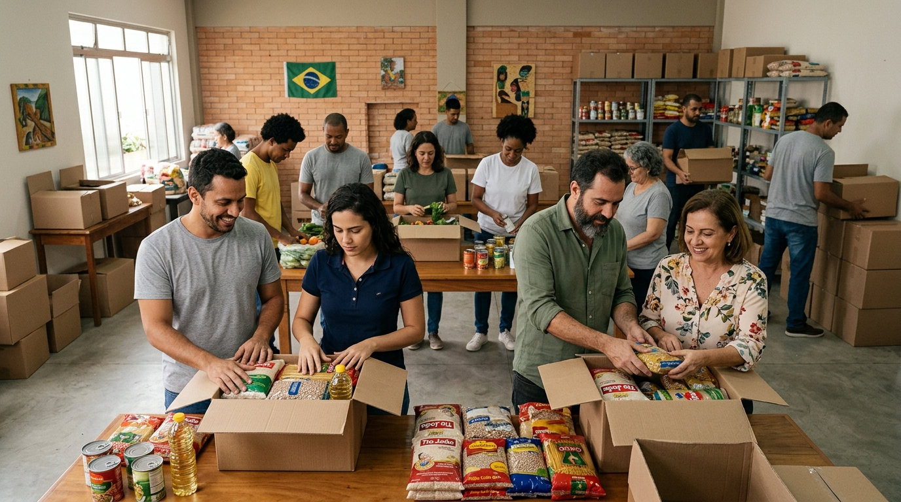

Arrecadação de alimentos

Nossa campanha arrecada alimentos e itens essenciais para a montagem de cestas básicas destinadas às famílias atendidas pela ONG.
Sua contribuição ajuda a garantir recursos básicos para pessoas em situação de vulnerabilidade.